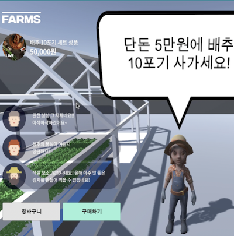
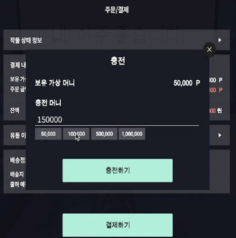

実装機能

|
移動とジャンプする機能 方向キーを押すと移動でき、スペースバーを押してジャンプすることもできます。 |

|
植物の情報を検索する機能 メタバス環境内で植物に近づいた後、ボタンをクリックすると、植物の実際の姿を含む多くの情報を見ることができます。 |
|  |
店舗に接続する機能 農家の店にアクセスして、現在販売中の農作物を照会して購入することができます。 |
|  |
農作物を購入する機能 保有中のキャッシュで農作物を購入することができます。 キャッシュが足りない場合は充電できます。 |
社会に貢献しようとしたこと
メタバス環境でも農作物を育てることができるので、農作物を育てる場所まで直接行く必要はありません。 また、人工知能プログラムを通じてコンピュータが農作物を知って管理してくれることも可能です。
メタバス環境でも農作物を育てることができるので、農作物を育てる場所まで直接行く必要はありません。 また、人工知能プログラムを通じてコンピュータが農作物を知って管理してくれることも可能です。
背景と目的
メタバス環境はまだ大韓民国に多く構築されていません。 最も代表的には、メタバス環境で農作物を育てることができるサービスは今大韓民国にありません。 そのため、メタバス環境で農作物を育てることができるプログラムを実装することになりました。
メタバス環境はまだ大韓民国に多く構築されていません。 最も代表的には、メタバス環境で農作物を育てることができるサービスは今大韓民国にありません。 そのため、メタバス環境で農作物を育てることができるプログラムを実装することになりました。
学んだこと
- UnityでHTTPリクエストを送信する方法を学びました。
- HTTPリクエストを送信して、NHオープンプラットフォームで支払い機能を実装する方法を学びました。
- HTTPリクエストを送信して、公共データポータルから公共データをインポートする方法を学びました。
- UnityでAgoraを使用して音声通信とビデオ通信を行う方法を学びました。
- PUN2でサーバーを構築する方法とFirebaseでデータベースを構築する方法を学びました。
- Unityでメタバス環境を構築する方法を学びました。
進行手順
- アゴラを使って音声通信する例をダウンロードしました。
- PUN2でサーバーを構築し、Firebaseでデータベースを構築しました。
- NHオープンプラットフォームで支払い機能を実装し、公共データポータルから天気データをインポートするようにしましたが、これは最も困難でした。
- これで、GoogleがUnityからHTTP Requestを送信する例を私のプログラムに適用して、UnityをNHオープンプラットフォームと連携させました。
- そして大会を主催した会社で行われた講義を再び見てフォローした後、ソースコードを修正して公共データポータルから天気データを読み込むようにしました。
- デザイナーがZeplinで設計した内容を慎重に見ながら、Unityで直接実装しました。
- このようにして目的のプログラムを実装できました。
- デモ映像を撮影した後、Google Driveにアップロードして企画者に送りました。
担当した役割と最も努力したこと
プログラム実装総括担当、HTTP RequestでNHオープンプラットフォーム連動および公共データポータルAPIを使用
プログラム実装総括担当、HTTP RequestでNHオープンプラットフォーム連動および公共データポータルAPIを使用
全体構造

使用技術
Unity, Photon, Firebase, Agora, NHオープンプラットフォーム, HTTP, Zeplin, Google Drive
Unity, Photon, Firebase, Agora, NHオープンプラットフォーム, HTTP, Zeplin, Google Drive
開発環境
Unity 2020.1.9f1
Unity 2020.1.9f1